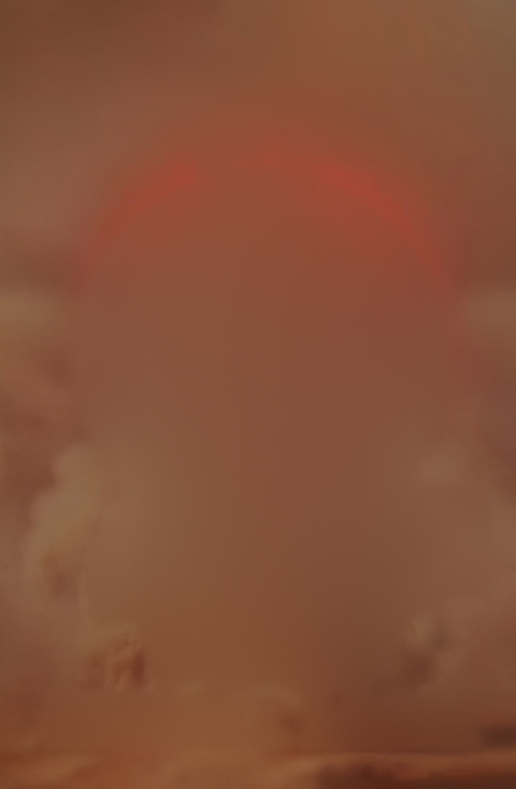
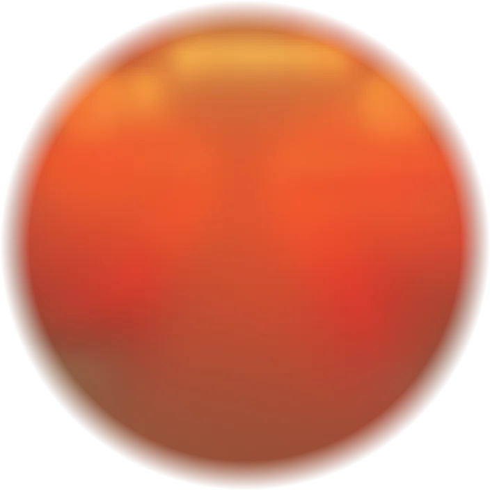
Whispers of a Red Dawn
Book five of The Khalada Stone series
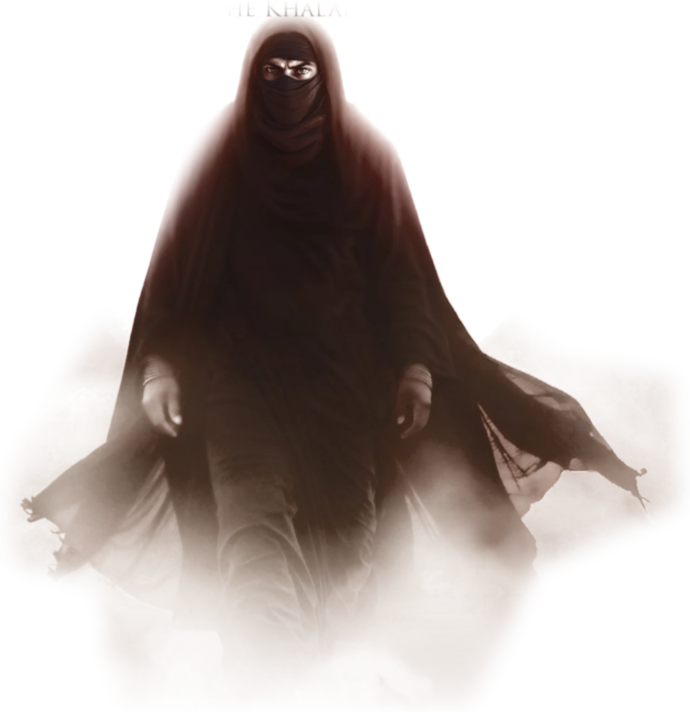
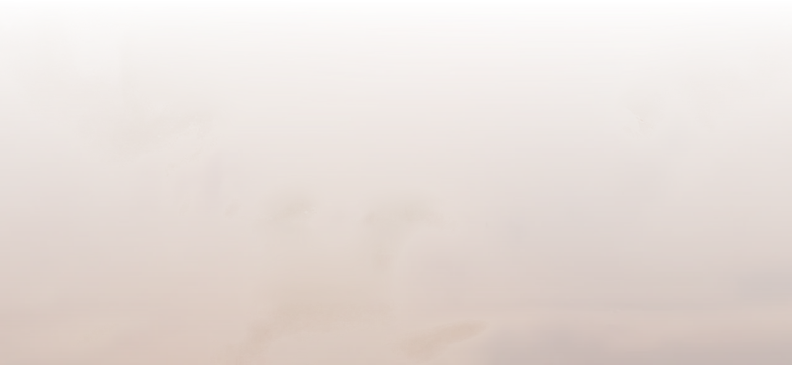
Whispers still drift across the wind.
The epic finale to The Khalada Stone. Out now in paperback and on Kindle.
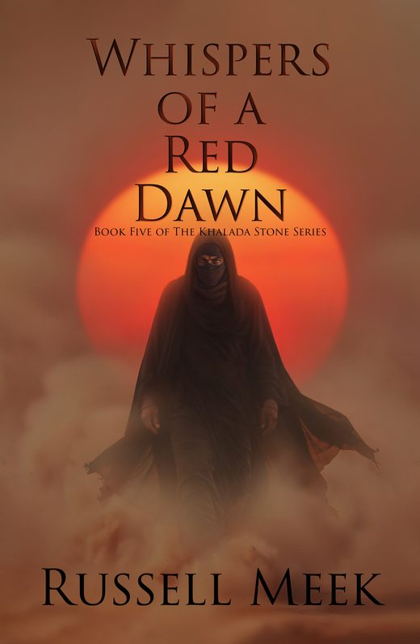
Book five. The finale.
Whispers of a Red Dawn
Ohrl has found Na’ilah’s ship. On an island consumed by the Dead, the final stone is within his grasp. Yet whispers still drift across the wind, his growing madness threatening to claim his mind. Certain that Na’ilah is still alive, Ohrl must find a way to control the Dead before it’s too late, but within the island, few of the Living are left to consume.
Marooned with Elsa, Mihja, Terttu and Loviisa, Na’ilah begins her hunt for the last stone. Desperate to reach Izz al-Din’s tomb alone, she is mocked by the priest for her failure, for the Dead are too many and too strong.
If the Dead rise, if Ohrl or Na’ilah return, it is a war the Living cannot survive.
Whispers of a Red Dawn concludes the struggles of two brothers in their quest against the rightful heir to the mind of al-Din.
The Khalada Stone, start to finish
Six harmonic stones hold the mind of al-Din. Two brothers, five books, and a thousand years of treacherous priests.
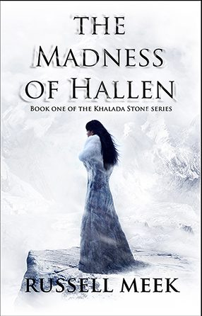
The Madness of HallenBook one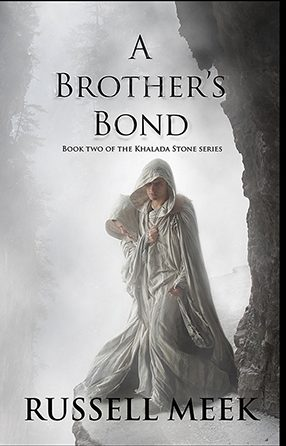
A Brother’s BondBook two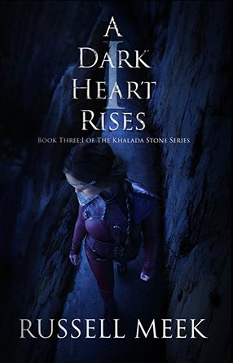
A Dark Heart Rises: IBook three, part one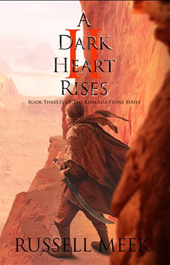
A Dark Heart Rises: IIBook three, part two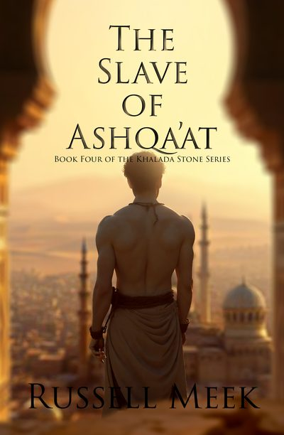
The Slave of Ashqa’atBook four- Whispers of a Red DawnBook five
Come and find me
I take the whole series on the road around New Zealand, with A3 concept art prints and I’m a Khalada Stoner t-shirts. This year so far:
- Armageddon, Christchurch
- Armageddon, Wellington
- Armageddon, Auckland
- Ages of Pages, Hamilton
- A Winter’s Day Out, Palmerston North
- Winter Christmas Market, Hamilton
- Armageddon, Palmerston North
- Armageddon, Auckland
Remember Charlie Willows
Something different from me: a novel of the Second World War, set in a village beyond the outskirts of Paris. A nurse, a young Māori pilot, and a daughter called Charlie, the beacon that will light her father’s way home.
Hope is a kind of magic, and everyone has one chance to become someone’s hero.
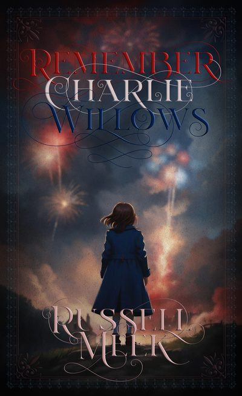
Russell Meek
Author, photographer, traveller.
It was the windswept deserts and ancient routes of the Middle East that set me on this journey. At 23, a photographer, I hitch-hiked across Syria, drove the King’s Highway through Jordan and stood at Petra as dawn rose.
That year took me from the Sahara to the Guatemalan jungles, and across the Atlantic. It never left me, and in 2007 it began seeping into the pages of The Khalada Stone.
After eight years in the UK photographing Europe and the Caribbean, I came home to New Zealand, where I live by the beach. I still travel for work and for the books: I shot the cover of A Brother’s Bond in China and A Dark Heart Rises: I in Southern Spain.